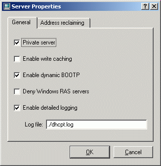
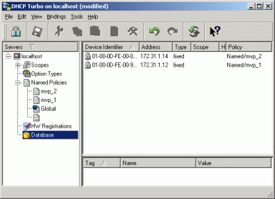
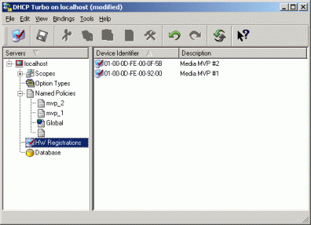
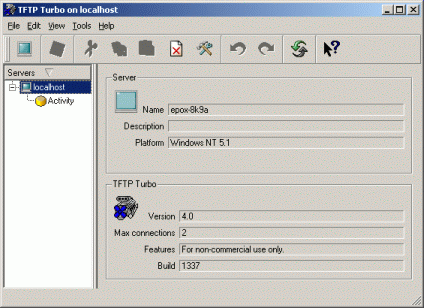

mvpmc Microsoft Windows HowTo
2006-12-02, v0.00.06
NOTE:
This HowTo only applies to earlier (non "H" revision) media mvp's.
ALL New users desiring to load the mediamvp software should first refer
to the
mvpmc Getting
Started wiki page.
From the mvpmc HOWTO by Robert Kulagowski:
The MediaMVP is a small, diskless Linux computer which obtains its
operating system via TFTP. From the information page at
http://www.hauppauge.com/pages/products/data_mediamvp.html:
"MediaMVP is a Linux based digital media receiver based on a powerful IBM
PowerPC processor. It includes a hardware MPEG decoder to process digital
video movies, while music and digital pictures are software decoded by
MediaMVP's processor. It receives the digital media from a PC via an
Ethernet LAN, decodes the media and outputs video through composite and
S-Video connections, and audio through stereo audio output connectors."
The mvpmc project uses the MediaMVP hardware and replaces the software that
the MediaMVP runs. Because the MediaMVP boots completely from the network,
changes made to the software aren't permanent - you can always switch back
to using the Hauppauge-supplied software with the Hauppauge supplied Windows server.
This HOWTO documents a proven method for installing (booting) the mvpmc
application from a Windows 2K/XP host onto the Hauppauge MediaMVP Set-Top-Box
Following is an overview of the MediaMVP boot process
- When power is applied to the MediaMVP the processor starts running its bootloader.
- The MVP's bootloader broadcasts a DHCP request over ethernet to get it's networking information,
the boot servers IP address, and the name of the software file to download.
- After the DHCP response is received, the bootloader proceeds to
tftp (download) its software load from the boot server.
- Once the MVP's bootloader completes tftp'ing the software load it
exits the bootloader and starts executing the software load.
So, what is needed for a Windows box to boot the MediaMVP with the
mvpmc application?.
- You NEED a DHCP server running on your Windows box.
Note: The DHCP server listens for DCHP requests on the
network. (i.e.: Your home LAN).
The MediaMVP's DHCP request contains its Ethernet MAC
address which uniquely identifies the MediaMVP to the DHCP
server.
(The MAC address is on a sticker on the bottom of the MediaMVP)
- The DHCP server tells the MediaMVP what IP address to use and to request certain boot files
from the TFTP server (see below).
- You NEED to have a TFTP server running on your Windows box.
The TFTP server sends the requested files to your MediaMVP AFTER it
has a successfully received a DHCP responce from the DHCP server.
- You NEED to have a TIME Server running on your Windows box or
access to a TIME server on the internet.
Note: AFTER your MediaMVP boots you MUST sync the time using a TIME
Server so that it can play files from a ReplayTV.
These are the three necessary components and they should be installed
and tested in this order. Once your MVP is booted you don't have to
have any of these servers running anymore, as long as your MVP doesn't
reboot.
If your MediaMVP loses power then the servers on the windows box will
need to be started to re-boot the device.
The MediaMVP requires two files when booting. These files are stored on the TFTP server for the MediaMVP
to download.
The files are:
- The mvpmc software load file.
- The mvpmc config file.
NOTE: The config file is basically like an "autoexec.bat" file for the MVP.
It is sent every time the MVP boots up.
You can make a very simple one that just syncs the time and starts the
mvmpc program. If you want you can also do things like mount windows
file shares and other stuff.
Note: The config file is the name of your software loadfile, with ".config" appended
to it.
e.g.: If your loadfile name is "dongle.bin.mvpmc" then the config file name is "dongle.bin.mvpmc.config"
Following are links to free utilities for booting and debugging mvpmc issues:
REQUIRED
DHCP Server and TFTP Server:
http://www.weird-solutions.com/download/demo.html
Under the above links "Standard Server Software" section download "DHCP Turbo" and "TFTP Turbo".
Both are free for personal use.
TIME Server:
http://www.adjusttime.com/
Download "Absolute Time Server". Free.
Note: You do not have to run a local TIME Server if your MediaMVP has
access to the internet.
For example you can sync the MediaMVP's time to time.nist.gov with a
line like the following in the config file:
"rdate -s 192.43.244.18" (More on this later)
Useful for Setup and Debugging Issues
Telnet Client:
A telnet client is used to access the mediamvp's command
shell. (Similar to a DOS command shell under windows)
Setup instructions in this How-To require a telnet client to manually
execute commands on the MediaMVP and verify that they pass. After
initial setup the telnet client is no longer required.
If you don't have a favorite telnet client a good free one is "putty":
http://www.chiark.greenend.org.uk/~sgtatham/putty/
Windows Editor that supports saving text files in UNIX mode:
This is required for editing your mvpmc config file.
Note: the difference between unix and dos text files is that dos
places carrage-return and linefeed characters at the end of each line
where unix only places a linefeed at the end of each line.
The mediaMVP sometimes complains and does not function correctly if
the config file is edited with an editor that does not support unix
text mode.
Following are some editors that support unix text mode recommended by folks on AVS-Forum:
metapad (Freeware) Set unix mode: File-FileFormat-UnixText
win32pad (Freeware)Set unix mode: File-FileFormat-Unix
textpad (Shareware with unlimited evaluation period)Set unix mode: File-SaveAs-File Format-Unix
Network Analyzer:
A network analyzer is useful for debugging problems like the MediaMVP
not receiving a DCHP response or not correctly downloading the
software load.
You will probably never need to mess with this but the link is here
just in case
If you don't have a network (packet capture) analyzer that you are familiar with I suggest "ethereal" which is free.
http://www.ethereal.com/
Download and install as described at:
http://www.ethereal.com/distribution/win32/
For now just download the latest mvpmc software release and save it on
your PC.
mvpmc software loadfile releases are available from the
mvpmc.sourceforge.net download page.
NOTE: The loadfile is the file that starts with "dongle.bin".
http://mvpmc.sourceforge.net/idx.php?pg=downloads
An initial config file can be obtained from the following link:
Link to example config file
For now just download the config file to your PC.
NOTE: You should use one of the editors listed in the "Windows Software"
section when editing this file.
NOTE: Config file lines beginning with '#' are comment lines.
Setting up the DCHP server is by far the most difficult part of getting the
MVP to boot. Hopefully this will streamline the process.
Pre-configuration:
- The Windows box acting as a DHCP server (Running DCHP-Turbo) must
be configured with a known (static) IP address.
If you have a hardware router/firewall that acts as a DHCP server for serving
IP addresses to your lan you need to configure it to always provide the same IP
address to your windows box. If your router's DHCP server does not support static IP
addresses then you will need to configure a static IP address for the windows box
under windows networking.
- Write down your MediaMVP's Ethernet MAC Address.
The mac address is on a white sticker on the bottom of the MediaMVP.
The sticker will look like "MAC 000DFE009200". This corresponds to MAC address 00:0D:FE:00:92:00.
- If you have a hardware router/firewall that acts as a DHCP server for serving
IP addresses to your lan you need to add the MediaMVP's MAC address to the routers "exclude" list.
i.e.: You don't want your router/firewall responding to the MediaMVP's DHCP request.
If your router's DHCP server does not support excluding specific MAC addresses
then the router's DHCP server will need to be disabled.
- The DHCP protocol uses UDP port 67 and UDP port 68. If you have a software firewall running
on your windows box you will need to open up UDP port 67 and UDP port 68.
- Determine the following information that will be required when setting up the DHCP server:
- Windows Box's IP address
- Your lan's subnet mask
- Your lan's broadcast address (ends with .255)
- Your lan's gateway address
- IP address you want to assign to the MediaMVP
- Hostname you want to assign to the MediaMVP
- mvpmc software load name
NOTE: The mvpmc software load name is the file you downloaded earlier.
eg: dongle.bin.mvpmc-0.1.8
Following is my lan configuration which is used in the "DHCP Turbo"
configuration example.
Note: I have two MediaMVP's One is used for development and the other runs a stable mvpmc software load
My lan is setup as 172.31.1.xxx.
- Windows Server IP address: 172.31.1.5
- Subnet mask: 255.255.255.0
- Broadcast address: 172.31.1.255
- Gateway address: 172.31.1.1
- MediaMVP#1 IP Address: 172.31.1.12
- MediaMVP#1 Hostname: media_mvp1
- MediaMVP#1 SoftwareLoad: dongle.bin.mvpmc
- MediaMVP#2 IP Address: 172.31.1.14
- MediaMVP#2 Hostname: media_mvp2
- MediaMVP#2 SoftwareLoad: dongle_mvp2.bin
Configuring DHCP Turbo:
We are going to setup the DHCP server to be a "private server". This means
it will only respond to DCHP requests for ethernet mac addresses we have
explicitly configured. (i.e: The mediaMVP )
- Install DHCP Turbo.
In addition to the program setup also installs a pdf "DHCP Turbo Administrators Guide"
Make sure to read through section 2.2.
- Start DHCP Turbo.
When the application comes up double-click the "localhost"
server and login. (No password is required).
The screen should look similar to the following.

- Right click "localhost" and select properties.
Enable "private server" and "detailed logging"

- Setup Global Policies
Global Policies are DHCP parameters that are common to all DHCP clients.
i.e.: Server Address, Subnet Mask, and Broadcast Address.
To add Global Policies: Expand the "Named Policies" entry. Next, Right-Click
"Global" and select "New Option".
Add the following options:
- standard option #1 "subnet mask"
- standard option #28 "broadcast address"
- standard option #3 "gateways"
- server control option #-14 "next server" (This is your windows
box's IP address)
Following is a capture of my global options.

- Create a "Named Policy" for each MediaMVP's specific parameters.
i.e.: boot file name, and hostname
To create a new "Named Policy": Right-Click "Named Policies" and select "New Named Policy".
Give the policy a name such as "mvp_1".
Next, add your options to the named policy, by right-clicking the named policy you
just created and selecting "New Option".
Add the following options:
- standard option # -1 "Boot file" (This is the name of the mvpmc software loadfile)
- standard option #12 "Hostname"
Following is a capture of my mvp_1 options.

- Add MediaMVP Ethernet MAC and IP address to DHCP-Turbo database
This is where the IP address gets assigned to the MediaMVP's Ethernet MAC.
Right-Click "Database" and select "New Reservation".
a.: Enter you MediaMVP's MAC address and the IP address you want to assign.
b.: Check the "Policies" box and then click "...".
Add the named policy (e.g mvp_1) that
you created earlier to the "Defined Policies" list.
Following is a screen shot from my setup

- Add the MediaMVP's MAC address to the "HW Registrations" list
This is where we tell DHCP-Turbo to respond to DHCP requests from a specific MAC address.
Right-Click "HW Registrations" and select "New HW Registration".
Enter the MediaMVP MAC address and a comment.

Screen shots of completed "Database" & "HW Registration"


- Save the DHCP-Turbo configuration
i.e. File -> Save
- Make sure the Server is started
i.e. Tools->ControlService->Start
Unplug and reconnect the MediaMVP's power adaptor
Messages at the bottom of the screen should cycle through:
- Checking Ethernet Connectivity...
- Contacting DHCP Server...
- Loading Application...
If you get to "Loading Application..." then the server is working properly.
If the screen hangs on "Contacting DHCP Server" and then proceeds to "Contacting MediaMVP Boot Server"
then Turbo-DHCP is either not receiving the request or is rejecting the request.
To debug check the DHCP-Turbo log file. The file is located in the DHCP-Turbo installation directory
and is named dhcpt.log.
If you see logs of the form:
Sat Feb 19 16:07:10 2005 Unregistered device 01-00-D0-59-6A-D9-E6 is being denied service.
Sat Feb 19 16:07:10 2005 The server is dropping a datagram.
It means that DHCP-Turbo is rejecting the DHCP request. Something is screwed up
with server's configuration.
If you don't see any logs specifying the MediaMVP's MAC address it means that the
request is not making it to the server.
Most likely, there is an ethernet connectivity problem or a software firewall is
blocking UDP port 67 and/or UDP port 68.
If all else fails you may want to install and start the ethereal network
analyzer to capture packets and see where the protocol is breaking down.
TFTP-Turbo is very easy to install & configure.
Configuring TFTP Turbo:
- Install TFTP Turbo.
In addition to the program setup also installs a pdf "TFTP Turbo Administrators Guide"
Make sure to read through section 2.3.
NOTE: The tftp protocol uses UDP port 69. If you have a software firewall running on
the windows box you will need to to open up UDP port 69.
- Start TFTP Turbo.
When the application comes up double-click the "localhost"
server and login. (No password is required).
The screen should look similar to the following.

- Right click "localhost" and select properties.
Enable "detailed logging"
NOTE: If you have a software firewall running on your windows box you will also need
to go to the TFTP Turbo properties->security tab and enable using a specific "Firewall Port".
(Be sure to open the port on your firewall)

- Save the TFTP-Turbo configuration
i.e. File -> Save
- Make sure the Server is started
i.e. Tools->ControlService->Start
By default TFTP-Turbo looks in the following directory for requested
files:
< TFTP Turbo install dir >/tftp_root
i.e.: The directory where files to be tftp'd are stored.
eg: "C:\Program Files\TFTP Turbo\tftp_root"
- Install and start the "Absolute Time Server".
NOTE: "Absolute Time Server" supports two different time server
protocols. These are RFC-868 (TIME) server and a RFC-2030 (SNTP) server.
For the MediaMVP we need the RFC-868 (TIME) server.
WindowsXP-Pro also starts it's own SNTP time server. So, if you get a winsock error when starting
"Absolute Time Server" just disable Absolute's SNTP server using the
GUI's checkbox.
- Telnet to the MVP and login.
- Enter: rdate < Server IP Addr >
Enter: date
The date should be set correctly. Example output below.
# rdate 172.31.1.5
Sun Feb 20 12:19:33 2005
# date
Sun Feb 20 12:19:35 EST 2005
From the MVP prompt type:
# mvpmc -R "ip=discover"
You should see messages scroll by in the telnet window & the mvpmc GUI
should be displayed on the TV.
If you have DVArchive and/or ReplayTV's you should be able to discover them, view the guide,
and play shows.
When done enter: < CNTL > -C to terminate the mvpmc application.
Finally, update your config file (The one stored in the "TFTP
Turbo/tftp_root" directory) to run the rdate command and start mvpmc
when the MediaMVP boots.
Cycle the MVP's power.
The MVP should now boot, the date should be set correctly, and the mvpmc application should start.
If you want to stream video or audio from your windows box, the
following describes how to configure the file share and how to tell
the MediaMVP to access the file share.
NOTE: Only Windows 2K, Windows XP, and greater fileshares are
supported.
Required Windows XP/2K registry addition:
To optimize streaming throughput go to the following Windows registry subkey:
\HKEY_LOCAL_MACHINE\SYSTEM\CurrentControlSet\Services\LanmanServer\Parameters
Create a SizReqBuf value using the following information:
ValueName: SizReqBuf
DataType: REG_DWORD
Value(Decimal): 33000
On Windows the file share can be setup for guest access or you can
add a special windows account for the share.
Info on setting up a WinXP share for guest access is at
http://www.wown.com/j_helmig/wxpsimsh.htm
For Linux running a samba server add the following line to the server's smb.conf file's [global] section:
max xmit 64000
(samba is a linux program that emulates a windows file share)
NOTE: The above optimizations basically set the file share's MAX data
block size to values greater than 32K bytes.
The current mvpmc kernel code limits data blocks to 32K so this will
cause data to be streamed in efficient 32K chunks :-)
File shares are mounted as follows from the MVP using the mount.cifs command.
NOTE: The "-o password=guest,rsize=34000" option should be used for
accessing a guest share using 32K block sizes.
NOTE: The "-o user=myUserId,password=myPassword,rsize=34000" option should be used for
accessing a non-guest share using 32K block sizes.
Following are example mvpmc config file entries for mounting a windows
file share.
mkdir /win_files;
mount.cifs //172.31.1.1/file_share /win_files/ -o password=guest,rsize=34000;
The file share is accessed on the MVP from directory "/win_files"
mkdir /cifs_share;
mount.cifs //172.31.1.1/file_share /win_files/ -o user=thewindowsuserid,password=thepassword,rsize=34000;
The file share is accessed on the MVP from directory "/win_files"
The share is being accessed by user 'thewindowsuserid' with password
'thepassword'. (Note: mount.cifs encrypts the password before sending it to the server)
Sometimes it is useful to capture a telnet session's I/O. The
following details how to enable logging for the putty telnet client.
- start putty
- under left side category: 'session' select 'logging'
- select 'log printable output only'
- Change the log file name & path to whatever you like.
- under left side category: select 'Session'
- Enter your mvp's IP address
- Select Protocol 'telnet'
- For 'Saved Sessions' enter a name like 'mvp_logged'
- Click 'save'
You should now have a 'mvp_logged' profile in your list of saved sessions.
Double click 'mvp_logged' to start putty & connect to the mvp.